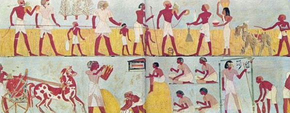

El teorema de Pitágoras en Egipto
Los Egipcios fueron pioneros en el hecho de que el rectangulo con lados de 3 y 4 tiene como
diagonal medida de 5, el cual es conocido como el
Triángulo Egipcio, además que
resulta en un triangulo rectángulo.
El trabajo resultante de las matemáticas: Eran conocidos como
harpedonaptas
y
cumplían la misma labor que la de los agrimensores actuales. Su trabajo consistia en delimitar
parcelas y replantear cimentaciones usando cuerdas con 13 nudos equidistantes, de tal forma que
al unir dos extremos se obtiene un
Triángulo Egipcio. Para las construcciones importantes,
los faraones personalmente medían la tierra y delimitaban el terreno para el edificio.
De estas prácticas, de
medir la tierra sale el término geometría.

Retratos hechos por los antiguos egipcios.
Tomado de
aqui.
(figura 1.1).
Videos de apoyo